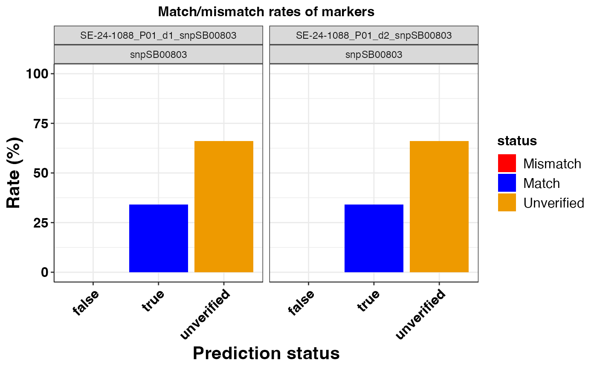
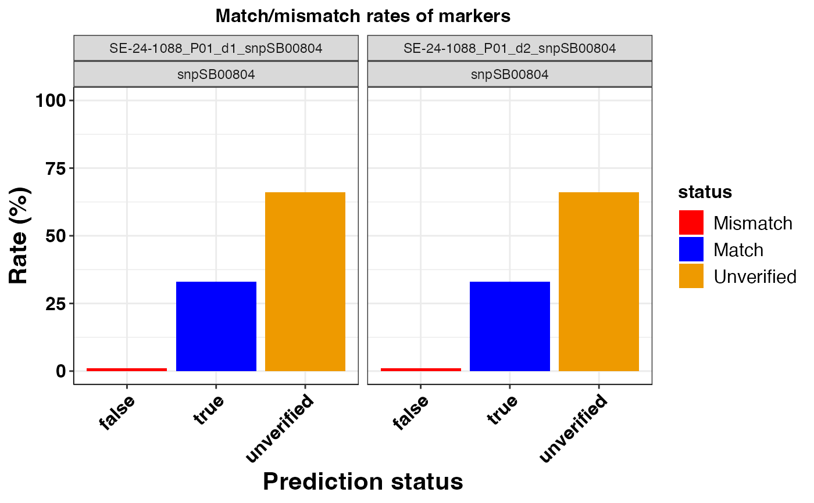
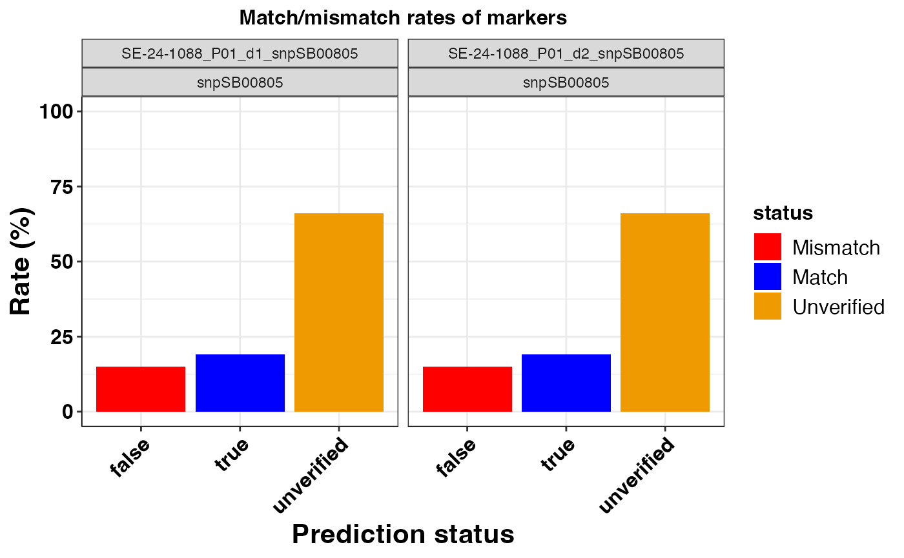
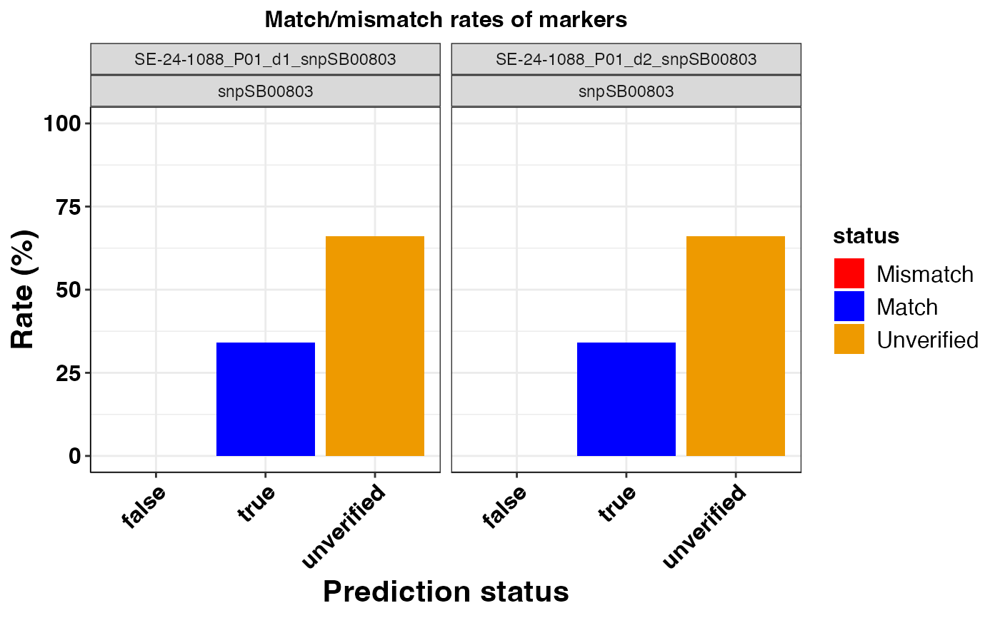
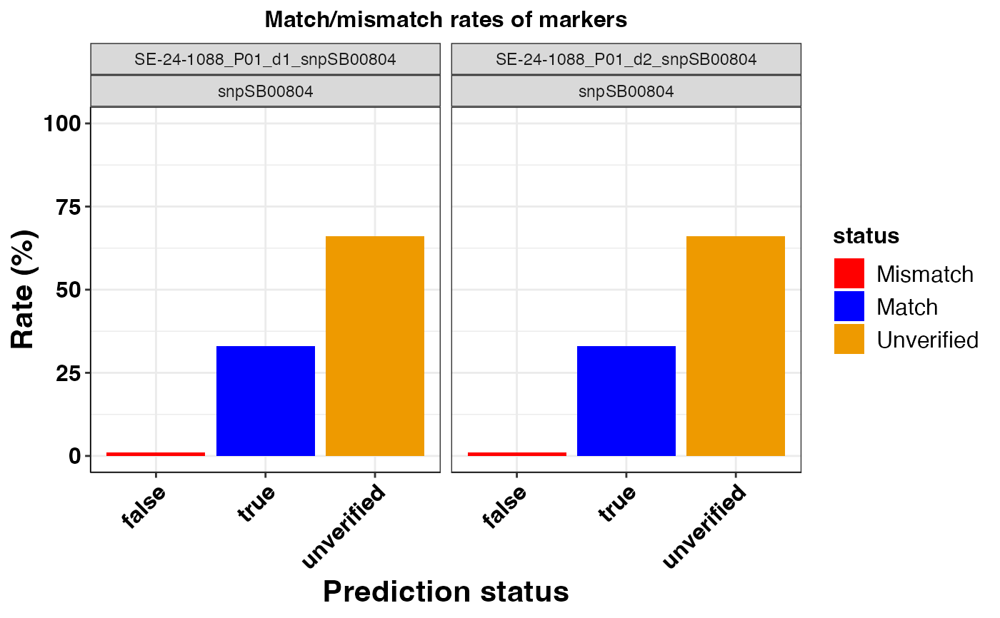
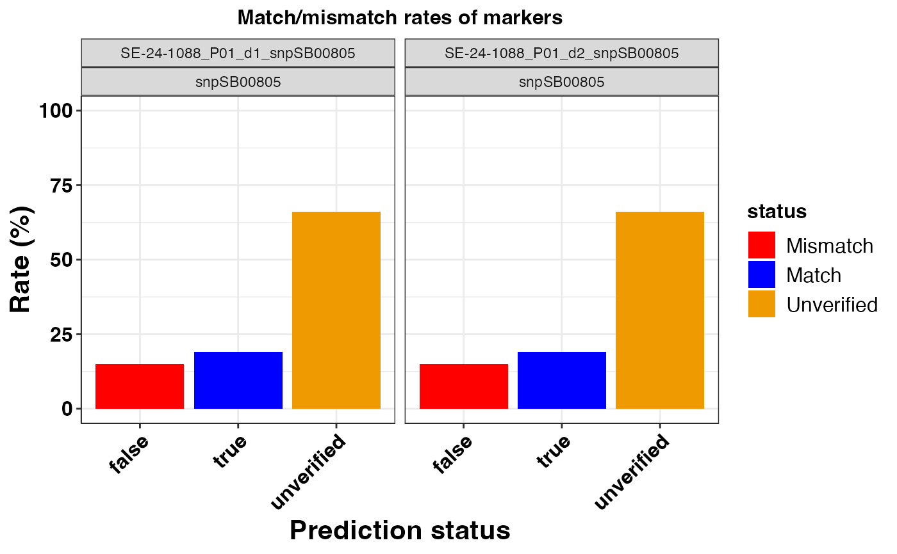

Create decision support bar plots of match vs. mismatch rates of KASP markers that had predictions for positive controls.
Source:R/kasp_validation.R
pred_summary_plot.RdCreate decision support bar plots of match vs. mismatch rates of KASP markers that had predictions for positive controls.
Usage
pred_summary_plot(
x,
pdf = FALSE,
pred_cols = c(false = "red", true = "blue", unverified = "orange2"),
filename = "pred_summary_barplot",
alpha = 1,
text_size = 12,
width = 6,
height = 6,
angle = 45,
...
)Arguments
- x
A data frame object of prediction summaries of KASP markers returned by the `pred_summary()` function.
A logical value indicating whether to save plot as a pdf graphic device when TRUE or output plot in R when FALSE.
- pred_cols
A named character vector of length = 3 of colors to be used for the prediction status legend for positive controls.
- filename
A character value for path or file name for saving pdf.
- alpha
A numeric value between 0 and 1 for modifying the opacity of colors.
- text_size
A numeric value for setting text size.
- width
A numeric value for the width of pdf device.
- height
A numeric value for the height of pdf device.
- angle
A numeric value for setting the angle placement for text on the axis.
- ...
Other valid arguments that can be passed to ggplot2.
Examples
# \donttest{
# example code
library(panGenomeBreedr)
dat1 <- panGenomeBreedr::beta_carotene
my_sum <- kasp_color(x = dat1,
subset = 'plates',
sep = ':',
geno_call = 'Call',
uncallable = 'Uncallable',
unused = '?',
blank = 'NTC') |>
pred_summary(snp_id = 'SNPID',
Group_id = 'Group',
Group_unknown = '?',
geno_call = 'Call',
rate_out = TRUE)
pred_summary_plot(x = my_sum$summ,
pdf = FALSE,
pred_cols = c('false' = 'red', 'true' = 'blue',
'unverified' = 'orange2'),
alpha = 1,
text_size = 12,
width = 6,
height = 6,
angle = 45)
#> $snpSB00800
 #>
#> $snpSB00803

#>
#> $snpSB00804

#>
#> $snpSB00805

#>
# }
#>
#> $snpSB00803

#>
#> $snpSB00804

#>
#> $snpSB00805

#>
# }